8.1.3. Absorption model theory¶
8.1.3.1. Introduction¶
In most astrophysical situations we have to take into account
absorption of photons between the emitting region and the observer.
Apart from a few standard models like the ones by Morrison & McCammon
(1983)
(our absm model) and Rumph et al.
(1994)
(our euve model) we have constructed our own absorption models based
upon the atomic database used by SPEX.
Essentially, we adopt a few steps, which will be described below. First, we produce a set of column densities, in different ways for the diferent absorption models (see Different types of absorption models). Next, using a dynamical model for the absorber we calculate its transmission (Dynamical model for the absorbers). For these calculations, we use our atomic database as described in Atomic database for the absorbers.
A basic assumption in all the absorption models is that there is no re-emission, i.e. we look through an absorbing nmedium that has a very small solid angle as seen from the X-ray source. This allows essentially to calculate the transmission simply as
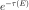
with the optical depth.
the optical depth.
8.1.3.2. Thomson scattering¶
The above approach also allows us to include Thomson-scattering in the
transmission. Any source photon aimed at the observer but that suffers
from Thomson scattering is scattered out of the line of sight and hanec
in this approximation is not seen by the observer. We have included not
simply the Thomson cross-section  but have taken the
Klein-Nishina correction into account (see Rybicki & Lightman 1986, eqn. 7.5 (exact expression)
and 7.6 (approximations)). The evaluation of the exact formula for the cross
section is non-trivial, as terms up to the third power in
but have taken the
Klein-Nishina correction into account (see Rybicki & Lightman 1986, eqn. 7.5 (exact expression)
and 7.6 (approximations)). The evaluation of the exact formula for the cross
section is non-trivial, as terms up to the third power in
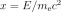
cancel; we have extended the low-energy polynomial approximation (7.6.a) of Rybicki & Lightman by comparing to quadruple precision calculations using the exact formula, and made the following approximation that has a relative accuracy of better than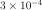
for all energies, when evaluated using single precision arithmetics: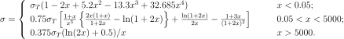
8.1.3.3. Covering factor¶
Most users would be happy with a model where an absorbing medium covers the full emitting source. However, there are situations where the background source is larger than the absorbing medium. In that case the covering factor
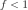
. This option has been implemented in older versions of our software through the parameterfcov.
However, there can be more complex situations. This occurs for example in active galactic nuclei,
where the X-ray continuum source may be smaller than the UV continuum source. In that case, for spectral
lines from the same ion, the covering factor of the X-ray absorption lines may be larger that the covering
factor of the UV lines. In order to model this situation, in the later versions (from 3.08.03 onwards)
we include the option of energy-dependent covering factors. Instead of the single parameter fcov we now
use five parameters, described below.
The covering factor is now given as
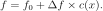
A where
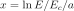
and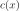
is a function of described below.
The parameter
described below.
The parameter 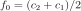
and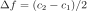
.We distinguish four cases using the parameter icov:
icov=1:
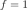
corresponding to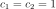
icov=2: (the default case, corresponding to the variable fcov in older versions of spex): math:c_1=c_2 but both values
can have any value between 0 and 1 (or equivalent math:Delta f = 0 ).
icov=3: arbitrary values for
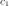
and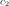
(but both between 0 and 1), and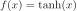
. This gives a somewhat sharper transittion between low- and high energies.icov=4: arbitrary values for and (but both between 0 and 1), and
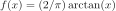
. This gives a somewhat smoother transittion between low- and high energies.The other four parameters of the model are:
fcov: corresponds to the variable above, i.e. the high-energy (asymptotic) covering factor.
lcov: corresponds to the variable above, i.e. the low-energy (asymptotic) covering factor.
ecov: corresponds to the variable
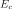
above, i.e. the energy (keV) where the covering factor equals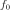
above, or the mean between high- and low-energy limits.acov: corresponds to the variable  above, i.e. the logarithmic scaling factor of the transition from low- to high energy limit.
This is therefore a dimensionless variable. A value of 1 corresponds to a transition over typically a factor of
above, i.e. the logarithmic scaling factor of the transition from low- to high energy limit.
This is therefore a dimensionless variable. A value of 1 corresponds to a transition over typically a factor of
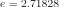
in energy. Sharp transitions are obtained for small values of this parameter.8.1.3.4. Different types of absorption models¶
We have a set of spectral models available with different levels of sophistication and applicability, that we list below.
8.1.3.4.1. Slab model¶
The slab model calculates the transmission of a slab of material, where all ionic column densities can be chosen independently. This has the advantage that a spectrum can be fit without any knowledge of the ionisation balance of the slab. After a spectral fit has been made, one may try to explain the observed column densities by comparing the with predictions from any model (as calculated by , Cloudy, XSTAR, ION or any other existing (photo)ionization code).
8.1.3.4.2. Xabs model¶
In the xabs model, the ionic column densities are not independent
quantities, but are linked through a set of runs using a photo
ionization code. See the description of the xabs model for more
details about this. The relevant parameter is the ionization parameter
 , with
, with  the source luminosity,
the source luminosity,  the hydrogen density and
the hydrogen density and  the distance from the ionizing
source. The advantage of the xabs model over the slab model is that
all relevant ions are taken into account, also those which would be
detected only with marginal significance using the slab model. In some
circumstances, the combined effect of many weak absorption features
still can be significant. A disadvantage of the xabs model happens of
course when the ionization balance of the source is different from the
ionization balance that was used to produce the set of runs with the
photo ionization code. In that case the xabs model may fail to give an
acceptable fit, while the slab model may perform better.
the distance from the ionizing
source. The advantage of the xabs model over the slab model is that
all relevant ions are taken into account, also those which would be
detected only with marginal significance using the slab model. In some
circumstances, the combined effect of many weak absorption features
still can be significant. A disadvantage of the xabs model happens of
course when the ionization balance of the source is different from the
ionization balance that was used to produce the set of runs with the
photo ionization code. In that case the xabs model may fail to give an
acceptable fit, while the slab model may perform better.
8.1.3.4.3. Warm model¶
In the warm model, we construct a model for a continuous distribution
of column density  as a function of
as a function of  . It
is in some sense comparable to the differential emission measure models
used to model the emission from multi-temperature gas. Here we have
absorption from multi-ionization gas. Depending upon the physics of the
source, this may be a better approximation than just the sum of a few
xabs components. A disadvantage of the model may be (but this also
depends upon the physics of the source), that all dynamical parameters
for each value of are the same, like the outflow velocity
and turbulent broadening. If this appears to be the case in a given
source, one may of course avoid this problem by taking multiple,
non-overlapping warm components.
. It
is in some sense comparable to the differential emission measure models
used to model the emission from multi-temperature gas. Here we have
absorption from multi-ionization gas. Depending upon the physics of the
source, this may be a better approximation than just the sum of a few
xabs components. A disadvantage of the model may be (but this also
depends upon the physics of the source), that all dynamical parameters
for each value of are the same, like the outflow velocity
and turbulent broadening. If this appears to be the case in a given
source, one may of course avoid this problem by taking multiple,
non-overlapping warm components.
8.1.3.4.4. Hot model¶
In the hot model, we link the different ionic column densities simply by using a collisional ionsation (CIE) plasma. It may be useful in situations where photoionisation is relatively unimportant but the source has a non-negligible optical depth. A special application is of course the case for a low temperature, where it can be used to mimick the absorption of (almost) neutral gas.
8.1.3.4.5. Pion model¶
Finally we have in the pion model, which does a self-consistent photo ionization calculation of the slab of material.
8.1.3.5. Dynamical model for the absorbers¶
For each of the absorption models described in the previous section, we have the freedom to prescribe the dynamics of the source. The way we have implemented this in is described below.
The transmission
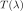
of the slab is simply calculated as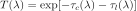
with
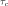
and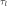
the total continuum and line optical depth, respectively. As long as the thickness of the slab is not too large, this most simple approximation allows a fast computation of the spectrum, which is desirable for spectral fitting.The total optical depth at line center
is given by
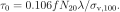
Here  is the oscillator strength,
is the oscillator strength,  the
wavelength in Å,
the
wavelength in Å,
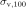
the velocity dispersion in units of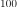
km/s and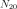
the total column density of the ion in units of
 .
.
Finally, we make a remark on the r.m.s. line width of individual lines,
 . In our code, this only includes the
turbulent broadening of the lines. The thermal broadening due to motion
of the ions is included by adding it in quadrature to the turbulent
broadening. The only exception is the slab model, where of course due
to the lack of underlying physics the thermal broadening is unknown, and
therefore in using the slab model one should be aware that
also includes a thermal contribution.
. In our code, this only includes the
turbulent broadening of the lines. The thermal broadening due to motion
of the ions is included by adding it in quadrature to the turbulent
broadening. The only exception is the slab model, where of course due
to the lack of underlying physics the thermal broadening is unknown, and
therefore in using the slab model one should be aware that
also includes a thermal contribution.